NayaSpend graphics library
glossy
Glossy gradient scenes (locked v13 landing). Gradient depth, brand ember/silver/violet.
scene-01.svgscene-02.svgscene-03.svgscene-04.svgscene-05.svgscene-06.svgscene-07.svgscene-08.svgscene-09.svgscene-10.svgscene-11.svgscene-12.svgscene-13.svgscene-14.svgscene-15.svg
ink-hybrid
Mix D: hand-drawn ink linework over soft gradient fills, objects only.
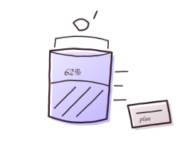
chapter-budget.svgchapter-capture.svg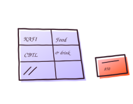
chapter-categorize.svg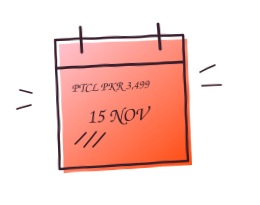
chapter-remind.svg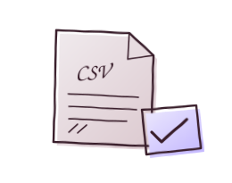
chapter-understand.svghero-pull-email.svgscene-17.svgtool-capture.svg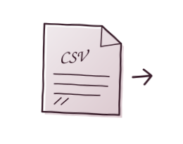
tool-csv.svgtool-dedup.svgtool-trends.svgtrust-read-only.svg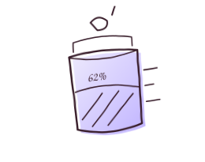
waypoint-budget.svg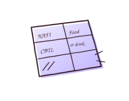
waypoint-category.svgwaypoint-email.svgwaypoint-transaction.svgwaypoint-trend.svgink-objects
Mix C: all-ink, objects only, no people.
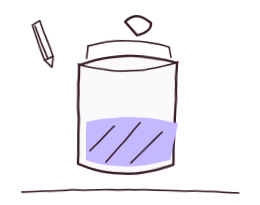
chapter-budget.svgchapter-capture.svgchapter-categorize.svg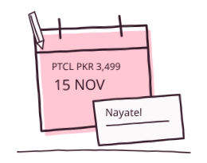
chapter-remind.svg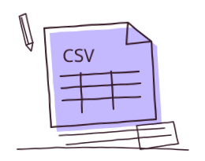
chapter-understand.svghero-envelope-ledger.svgscene-17.svgtool-capture.svg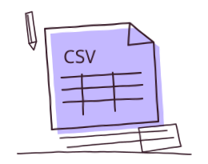
tool-csv.svg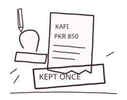
tool-dedup.svgtool-trends.svgtrust-read-only.svg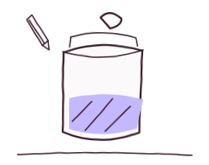
waypoint-budget.svg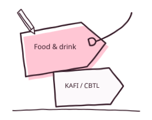
waypoint-category.svgwaypoint-email.svgwaypoint-transaction.svgwaypoint-trend.svgink-people
v14 ink landing: hand-drawn ink with people and objects.
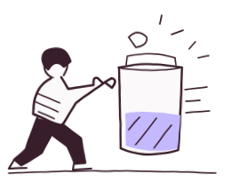
chapter-budget.svgchapter-capture.svg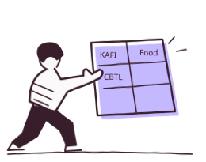
chapter-categorize.svgchapter-remind.svgchapter-understand.svgclosing-records.svghero-pull-email.svgtool-capture.svgtool-csv.svgtool-dedup.svgtool-trends.svgtrust-read-only.svg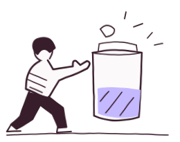
waypoint-budget.svg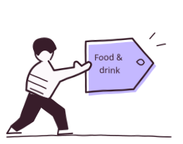
waypoint-category.svgwaypoint-email.svgwaypoint-transaction.svgwaypoint-trend.svg